El museo por fuera
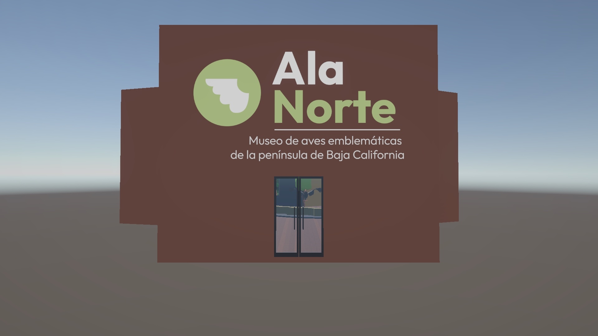
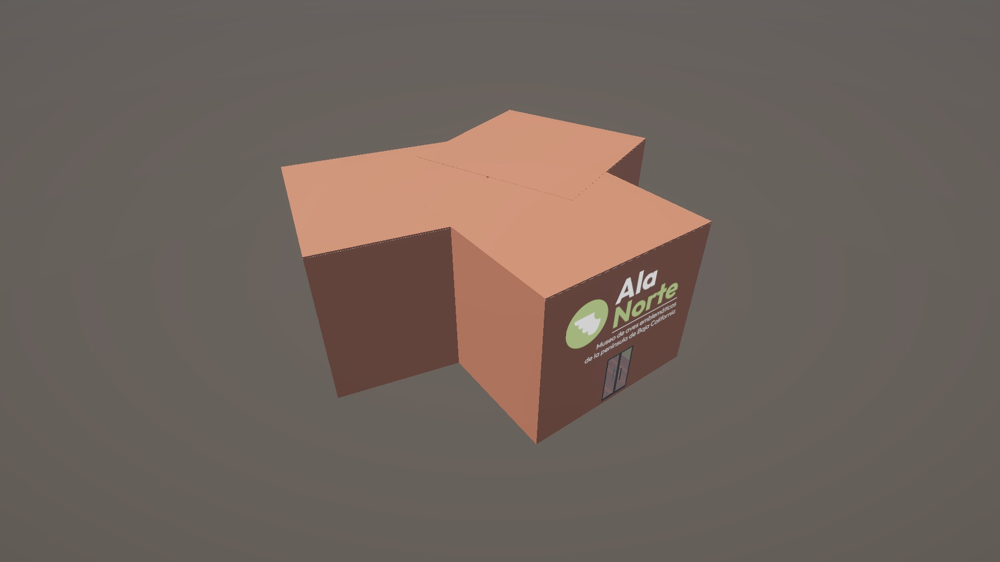
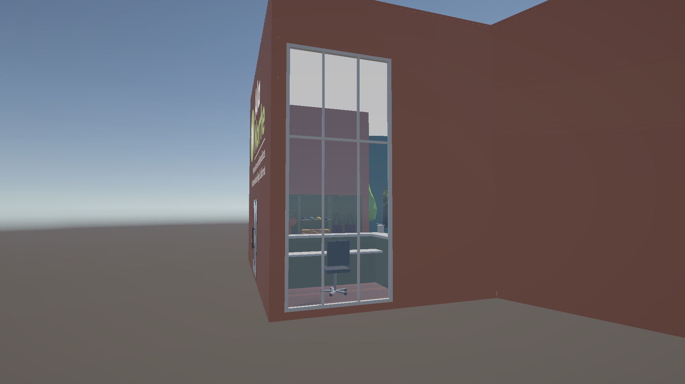
Museo por dentro
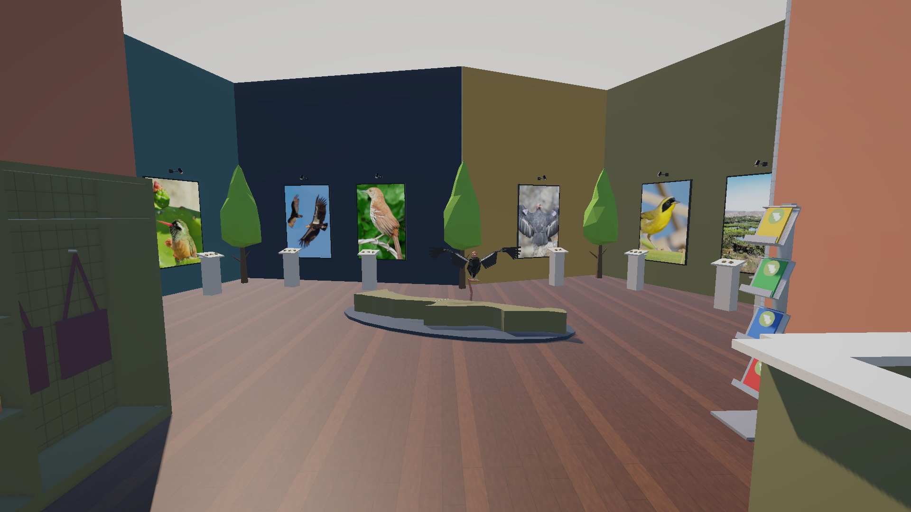
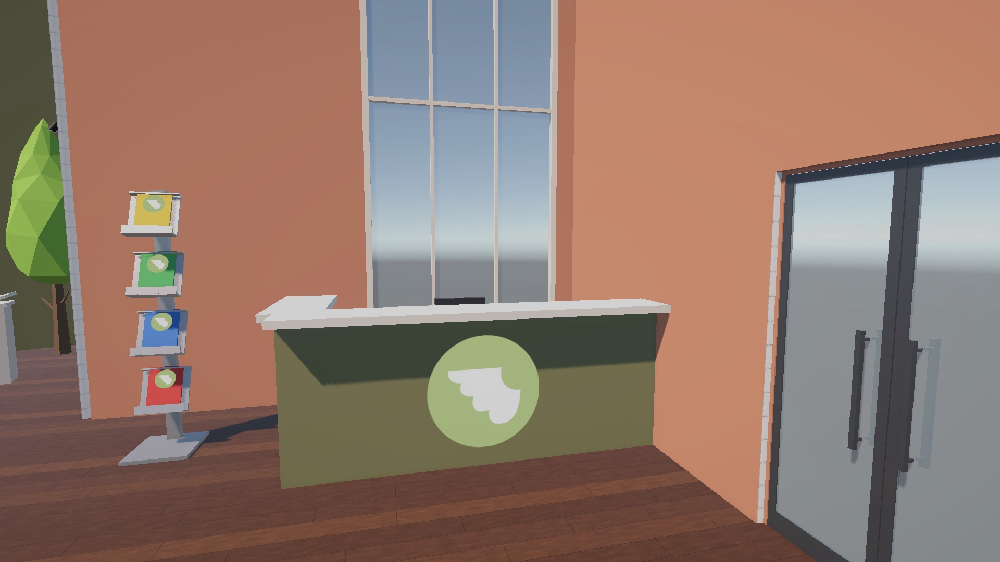
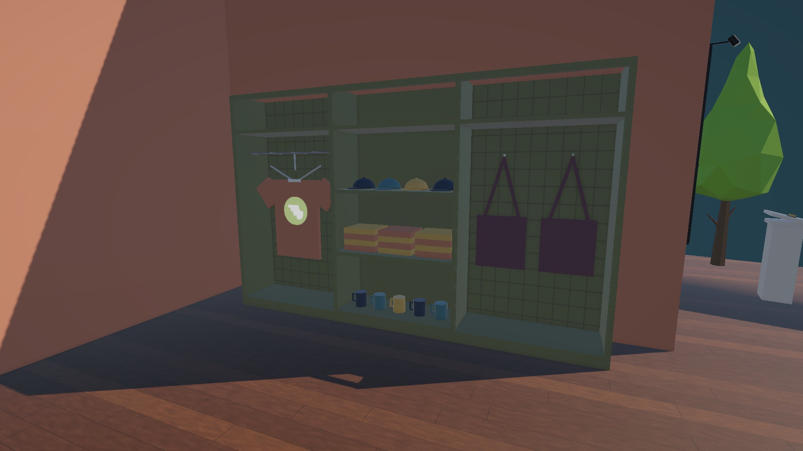
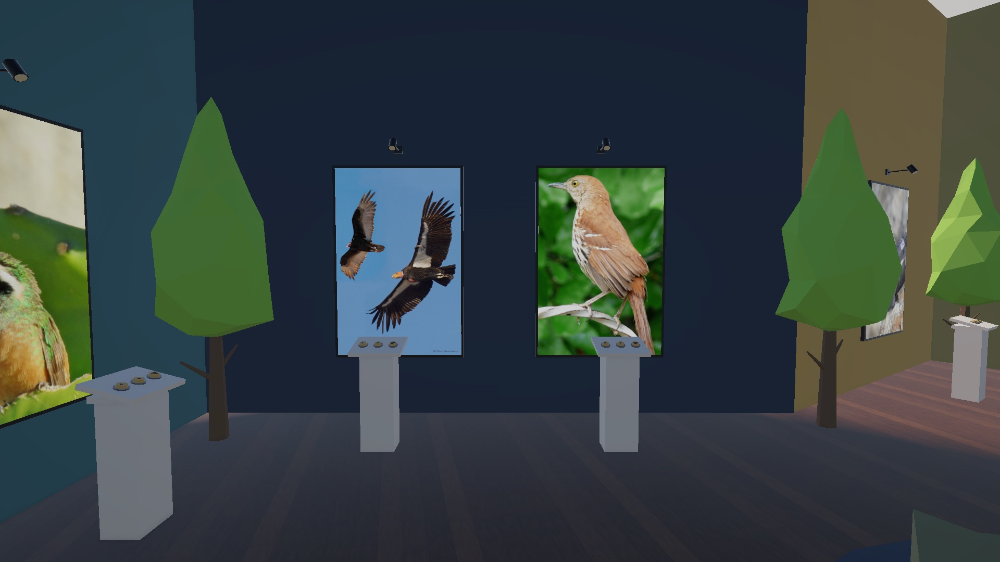
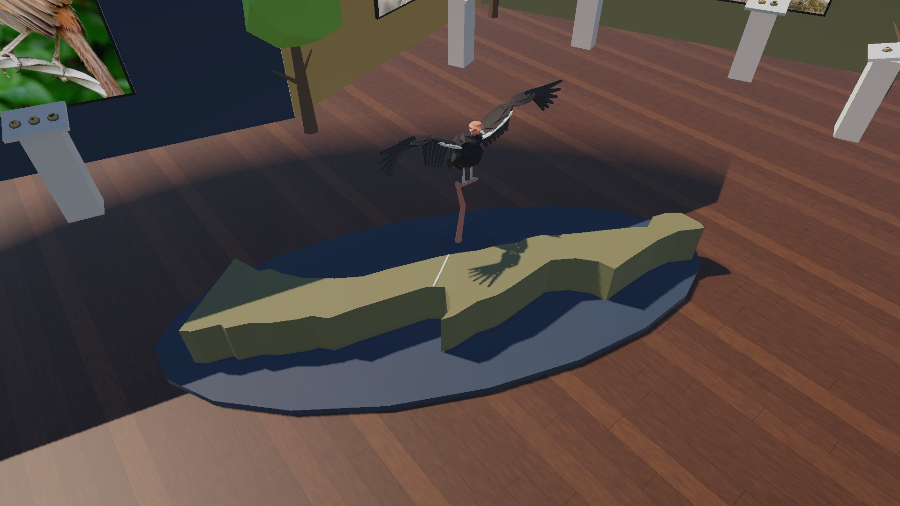
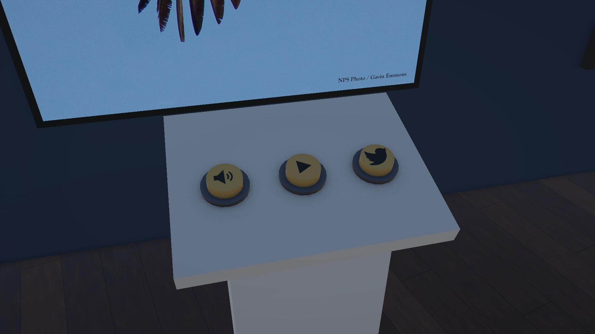
Nuestras aves
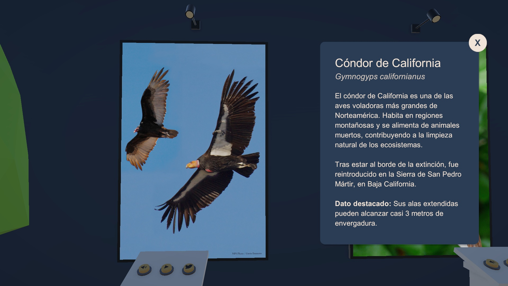
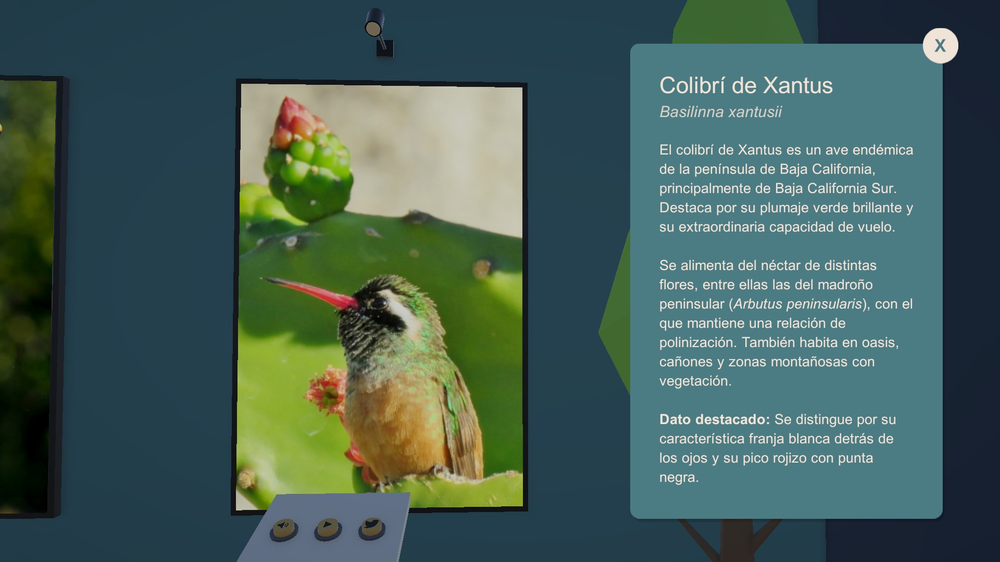
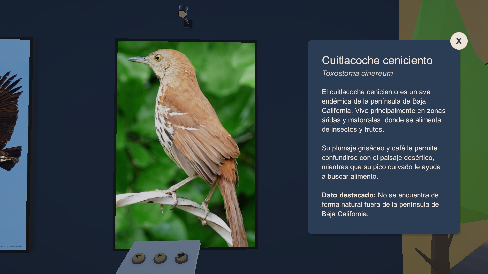
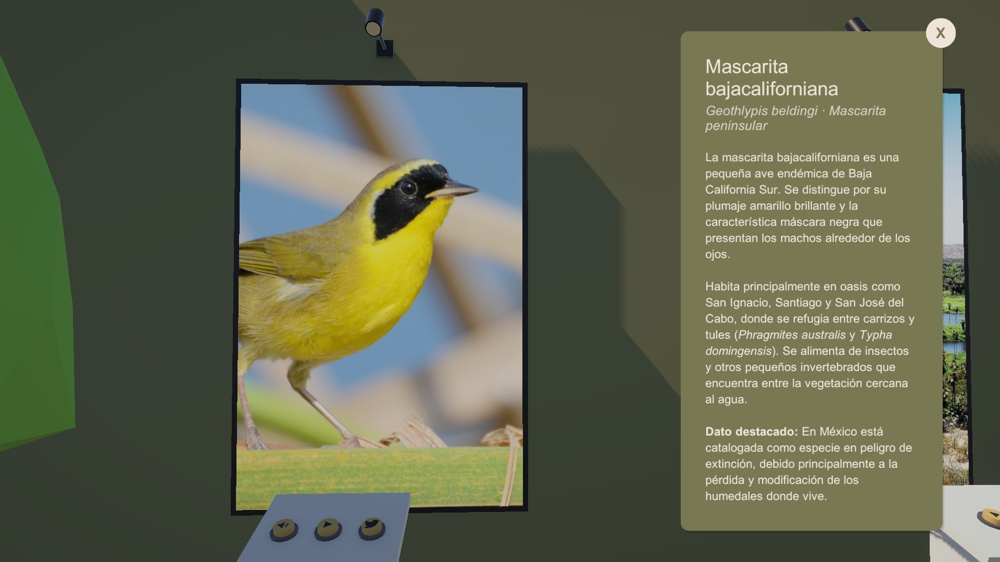
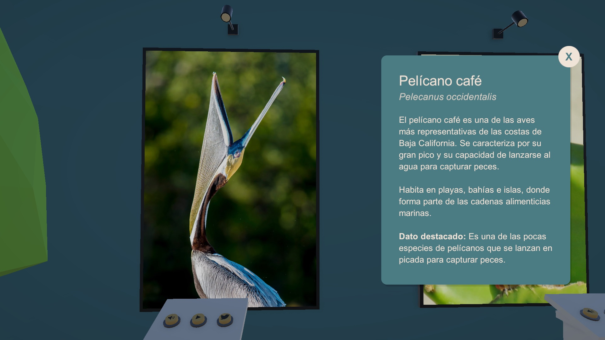
Un recorrido virtual por cinco aves que representan la riqueza natural de la península. A través de pantallas interactivas, fotografías y fichas informativas, el visitante descubre dónde viven, qué papel cumplen en sus ecosistemas y por qué es importante proteger sus hábitats.













